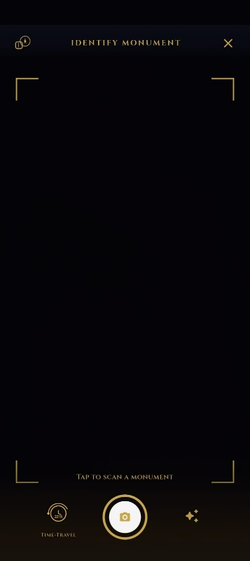
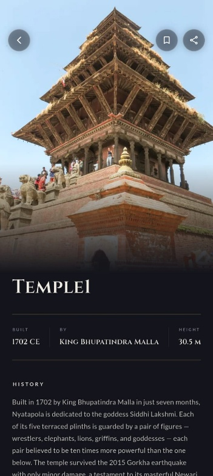
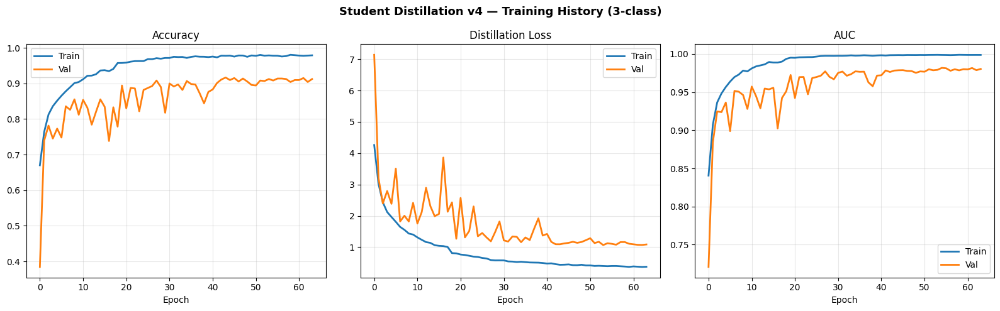
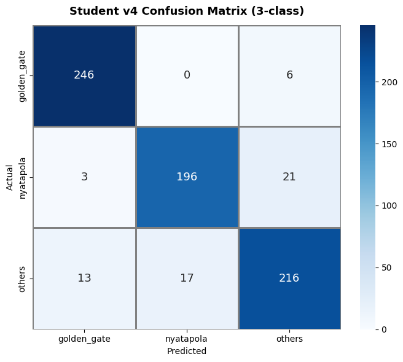
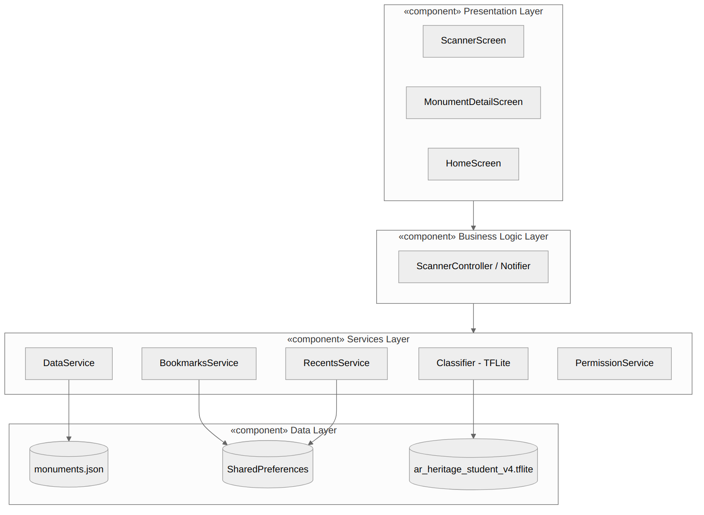
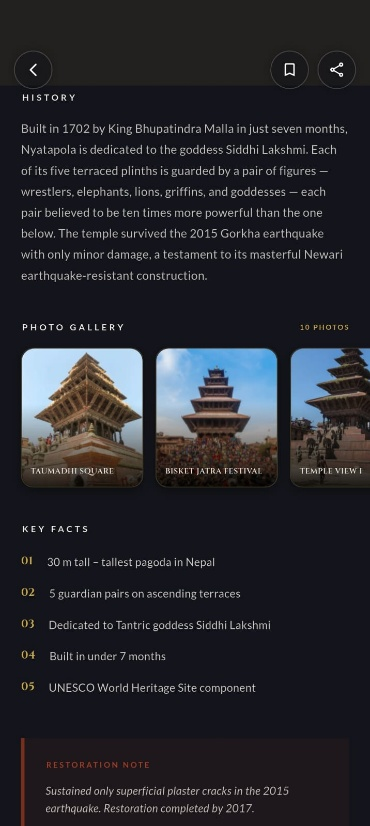
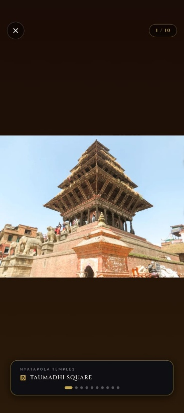
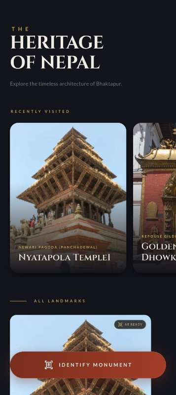

Identify historical monuments in Bhaktapur instantly using on-device edge AI. No internet required.

Designed specifically for cultural heritage preservation in brick-and-timber UNESCO heritage corridors where cellular reception is congested or absent.

Real-time camera viewfinder calibrated with custom heritage corner brackets and animated gold shutter ring. Image decoding, bilinear downscaling to 160×160, and float32 normalization execute in an independent Dart isolate (compute), sustaining a locked 60 FPS UI.
Deep historical narratives, builder timelines (King Bhupatindra Malla, 1702 CE), architectural blueprints (Panchadewal Newari Pagoda), and 2015 Gorkha earthquake structural resilience records. Bundled directly into the app assets with instant local fallback caching.
Persistent local bookmarks and an LRU recently-explored monument queue capped at 10 entries via SharedPreferences. Zero user tracking, zero remote telemetry, and zero battery drain while exploring the Durbar Square alleyways.
Compressing architectural feature extraction from heavy server vision into a 1.80 MB mobile model without sacrificing recognition confidence.
Validation set accuracy (n = 718) achieved by our distilled student CNN. Operates within 2.37% of the heavy EfficientNetB0 teacher (94.01%), beating the 5% project acceptance threshold.
Total binary size of ar_heritage_student_v4.tflite. Converted with 100% output parity across validation checkpoints, with zero external server dependencies or API runtime requirements.
Sub-100ms class inference budget. Empirically profiled on physical release Android hardware (OPPO CPH2413): pure model inference averages ≈101 ms (range 95–111 ms) following warm-up.
Hinton et al. Soft-Probability Transfer with Kullback-Leibler (KL) Divergence Loss
| Metric / Dimension | Teacher Network (EfficientNetB0) | Student Network (AR Heritage v4) | Edge Efficiency Delta |
|---|---|---|---|
| Validation Accuracy | 94.01% | 91.64% | -2.37% (Accepted) |
| Total Parameter Count | ~4,050,000 params | 471,843 params | 8.6× Parameter Reduction |
| Model File Size | 16.2 MB | 1.80 MB (.tflite) | 9.0× Storage Savings |
| Input Tensor Shape | [1, 224, 224, 3] float32 | [1, 160, 160, 3] float32 | 49% Fewer Input Pixels |
| On-Device RAM Budget | Prohibitive for background thread | <14 MB Peak Allocated | Zero UI Stutter |
| Loss Function | Categorical Cross-Entropy | KL Divergence Loss (T=3.0) | Soft Probabilities Transfer |

Validation curves demonstrate monotonic distillation convergence: loss drops from 7.15 to 1.09, while AUC surpasses 0.98. The 4-block CNN learns fine Newari architectural cues directly from the teacher's probability distribution.

Evaluation shows extraordinary discriminative power: Golden Gate achieved 246/252 correct predictions (F1 = 0.9572), while Nyatapola Temple scored 196/220 (F1 = 0.9011).

How we leverage Claude (Anthropic's frontier AI) on the backend to process, structure, and sanitize dense, unstructured historical texts into the highly-optimized offline JSON catalogs that the mobile application relies on.
Ingestion of dense archaeological monographs, Department of Archaeology bulletins, and Malla-era Sanskrit/Nepal Bhasa epigraphic field logs.
Anthropic Claude extracts factual chronologies, architectural terminology (e.g. Panchadewal), builder lineages, and seismic damage reports from source texts into structured fields.
Claude parses and validates output against strict Pydantic/Dart data contracts: key highlights, localized Nepali typography, and verified hex color palettes.
Compiled into ultra-lightweight monuments.json bundled inside the Flutter asset cache, ready for millisecond lookup without cellular connection.
// Sanitized by Anthropic Claude • Bundled in AR Heritage production build [ { "id": "nyatapola_temple", "name": "Nyatapola Temple", "nepali_name": "न्यातापोला मन्दिर", "architecture_style": "Newari Pagoda (Panchadewal)", "built_year": "1702 CE", "built_by": "King Bhupatindra Malla", "height_label": "30.5 m", "full_history": "Built in 1702 by King Bhupatindra Malla in just seven months, Nyatapola is dedicated to the goddess Siddhi Lakshmi. Each of its five terraced plinths is guarded by a pair of figures — wrestlers, elephants, lions, griffins, and goddesses — each pair believed to be ten times more powerful than the one below. The temple survived the 2015 Gorkha earthquake with only minor damage, a testament to its masterful Newari earthquake-resistant construction.", "earthquake_note": "Sustained only superficial plaster cracks in the 2015 earthquake. Restoration completed by 2017.", "highlights": [ "30 m tall – tallest pagoda in Nepal", "5 guardian pairs on ascending terraces", "Dedicated to Tantric goddess Siddhi Lakshmi", "Built in under 7 months", "UNESCO World Heritage Site component" ] } ]
# System Prompt for Claude 3.5 Sonnet Cultural Extraction Engine system_prompt = """ You are an expert Nepalese architectural historian and computational taxonomist. Ingest unstructured field excavation reports and historical chronicles for Bhaktapur monuments. Extract and sanitize into strict JSON complying with the AR Heritage mobile schema: - Normalize Newari architectural terminology (e.g., Panchadewal, Repoussé, Torana). - Retain exact historical consensus dates (CE) and Malla dynasty royal lineages. - Extract concise, bulleted key structural facts for mobile viewport cards. - Format earthquake resilience records from the 1934 and 2015 Gorkha events. - Never invent dates or speculative folklore; output 100% verified historical schema. """
Evaluated in high-glare noon sunlight, monsoon overcast conditions, and crowded festival days (Bisket Jatra) at Taumadhi Square.

Equipped with 10 high-resolution historical perspectives and zoomable archival photos from 1894 to present day.

Inspect intricate wood carvings, multi-tiered strut reliefs, and guardian plinth statues with zero pixelation lag.

Curated editorial typography celebrating Nepal’s architecture with instant jump-points to recently discovered landmarks.
Experience our offline-first Flutter application now, or join our enterprise waitlist for expanded landmark models across Kathmandu Valley.